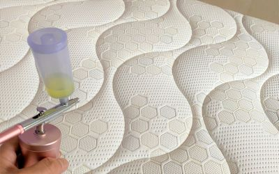
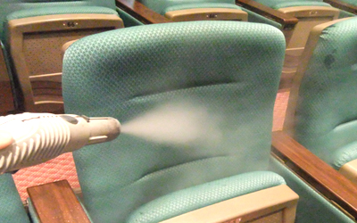
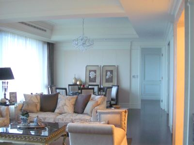

塵螨生長環境
台灣地區位於亞熱帶地區，氣候溫暖潮濕，氣溫終年溫暖,為塵螨最適合生長環境。
塵螨是一種微型昆蟲,大約全世界約有近40種，在台灣家塵中種類與數量，最多為歐洲室塵 蹣，美洲室塵塵蹣與熱帶無爪璊次之，這三種璊類為台灣地區的重要過敏原
塵璊多發生於居住環境中棉被、枕頭、彈簧床、床墊、木地板縫、地毯、沙發與厚重衣物等處富含纖維之環境中，尤溫度與濕度影響塵螨之生存,塵螨是靠其皮膚取得空氣中水份及氣體，當濕度低於50%時，其發育延遲且死亡率會增加，而濕度愈高璊數愈多呈正相關之趨鰻,以台灣的塵螨在溼度為70%～80%間,室內溫度在24-28度間,是其最佳繁殖環境
市面上有很多抗螨床單衣物,但經清洗後都會失效,部份是在上面加工抗螨塗料,其效用是降低螨的有利生活環境,並不能真的100%抗螨,而是添加了如百滅寧(合成除蟲菊成份)環境用藥去除塵蹣,它會經皮膚吸收,2013.12有媒體播出國內知名之洗衣粉就是加了此成份,但國內並無法源規定不得添加在洗衣粉內,其危害有多大,則可由環境用藥安全查知,因此還是以日常清潔為主

塵螨過敏
因環境產生過敏.其過敏源包含寵物毛.蟑螂.塵螨.這三大項為主因
其中塵螨引起過敏,有急性和慢性,急性通常是在整理衣物打掃時,大量吸入過敏源,慢性則是日常生活中長期與其共生活
塵螨過敏症狀為鼻癢、眼癢,打喷嚏,揉眼睛.揉鼻,等表现,另外也會咳嗽,喘息, 胸燜.呼吸困難(氣喘)..等等。
塵螨防治或改善有下列四種方法
1、環境改善:定期房屋清潔以及使用除濕機及空氣清淨機。(此為最重要)
2、药物治療：透過醫生診斷服用抗组胺药物，緩解過敏症狀。
3、減敏治療:透過醫院檢驗是否對其過敏,並在醫生的指導下，進行用药或打針等方式達到降低對塵螨過敏。
4、運動:透過適當持續運動,增強抵抗力,達到減少過敏機率
對於塵螨過敏率兒童高於成人,尤其是在幼兒園國小間,往往成年後就會改善許多,而我們對塵螨過敏的主要因素是來自塵螨的排瀉物其蛋白,因此居家環境整理為最重要項目

除塵螨
預防過敏源:日常生活中從源頭根除
1.保持乾燥:晴天通風以及除濕機在濕度60以上就須使用
2.勤洗衣物.過季衣物使用真空塑膠袋收納
3.使用有具有認證HEPA吸塵器,一般此類吸塵器都是專業在用,選購無塵室使用之吸塵器品牌,其可靠度會高
4.空調濾網需要常清洗,空氣清淨機初級濾網也需常清洗
5.家中床墊可適用防塵螨套,沙發選用木製或皮製品較纖維製品優
6.家中裝潢簡單 (待續)
(待續)

其它注意事項
除塵螨並非一次就能永逸,而是要長期保持環境清潔